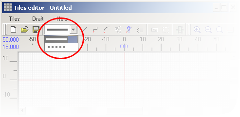
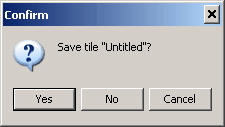

Tiles editor opens in a new window:
To start drawing the draft of a tile, open a new document (Tiles > New or Tiles > Open). Another option is to use the toolbar. After you open a new document, all tools available on the toolbar will be enabled.

To create a tile outline you can use such drawing entities as line segments, polylines and arcs. For more details, please view the Drawing graphic objects article.
|
Important! To draw a tile you can use two types of the lines - solid and dotted ones. You can choose the line type you need in the drop-down menu on the toolbar.
 Note: The external outline should be drawn with a solid line. |
You can easily edit the drawing entity you have previously created. Click the Graphic Objects List button
After the new tile draft is ready, save the draft using menu Tiles > Save or by pressing

and enter the name.
After you have drawn the tile (e.g. a rectangle with 200x100 mm sides) you can proceed creating a pattern.